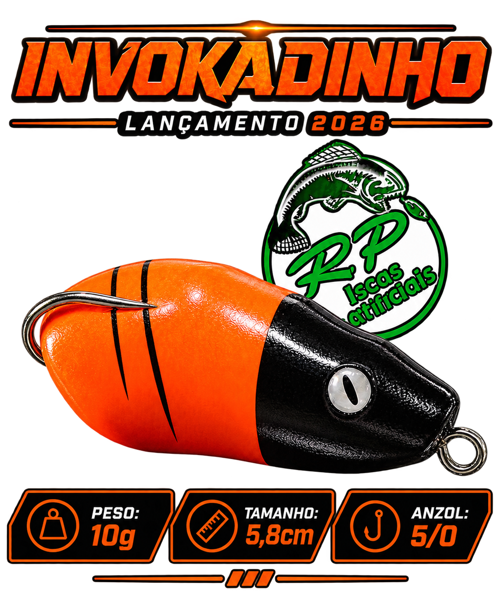

Isca pequena, de arremesso longo, fisgada certeira e excelente resistência!
A RP Iscas Artificiais nasceu de uma paixão.
A pesca esportiva e o desejo de criar produtos de qualidade para quem, assim como nós, vive essa
paixão.
Nossa história começou em 2016, com o nome RP Pesca Esportiva. Os primeiros projetos foram desenvolvidos
em madeira, dando início a uma jornada de muito aprendizado, testes e evolução.
Com o passar do tempo, buscamos novas tecnologias e possibilidades para oferecer ainda mais qualidade
aos pescadores. Foi então que começamos a desenvolver nossas iscas de borracha, que se tornaram parte
importante da nossa marca.
Hoje, a RP Iscas Artificiais conta com 17 modelos de iscas artificiais, desenvolvidos com dedicação,
cuidado e atenção em cada detalhe.
Mais do que fabricar iscas, buscamos criar produtos em que o pescador possa confiar em cada
arremesso.
Nossa história continua sendo construída todos os dias, sempre buscando qualidade, inovação e evolução,
sem perder aquilo que nos trouxe até aqui: a paixão pela pesca.
RP Iscas Artificiais — feita por quem vive a pesca.